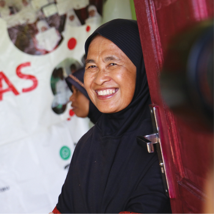
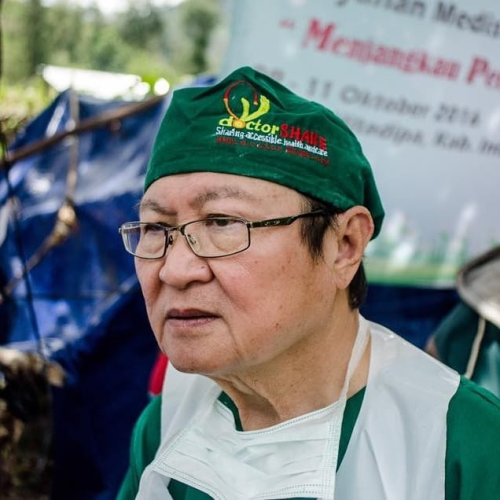
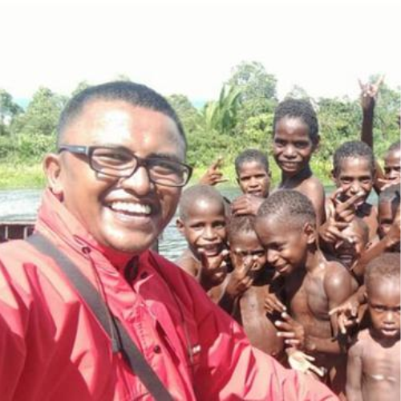
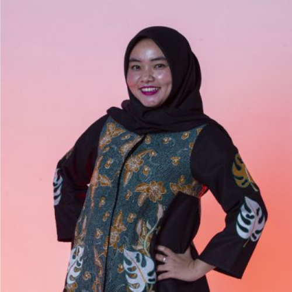
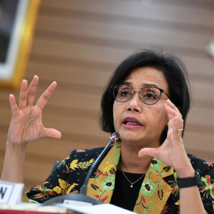
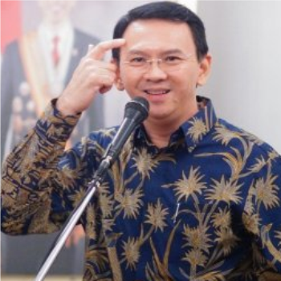
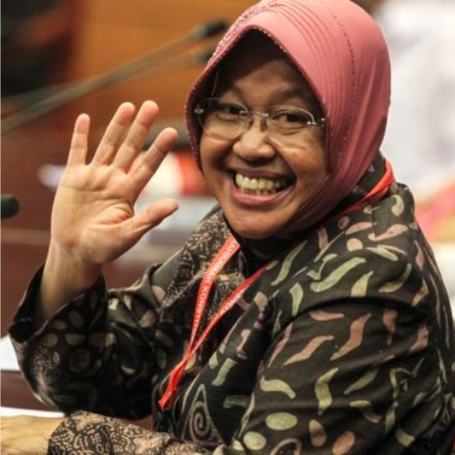
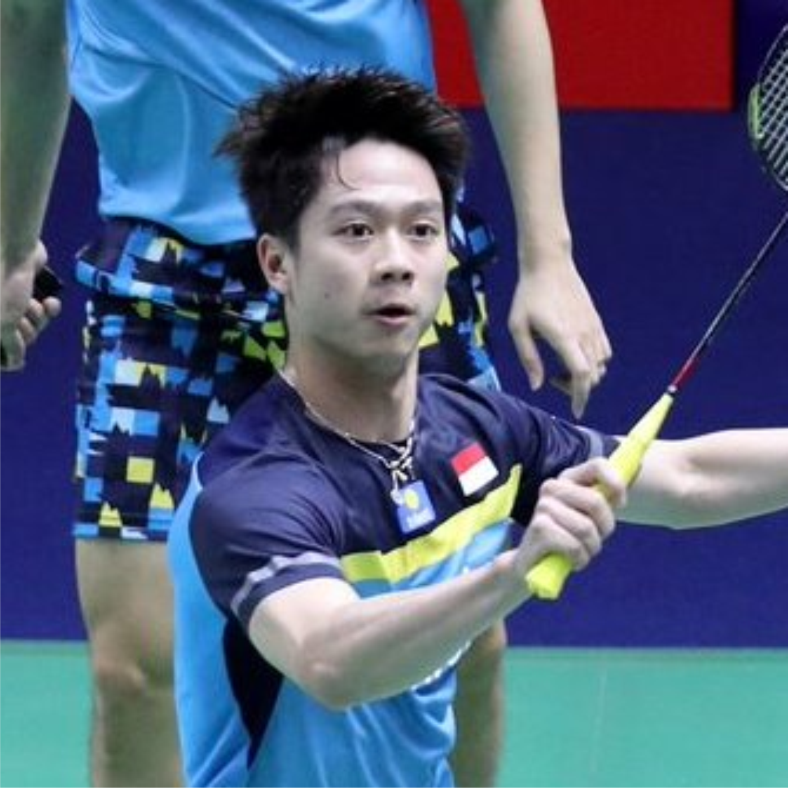
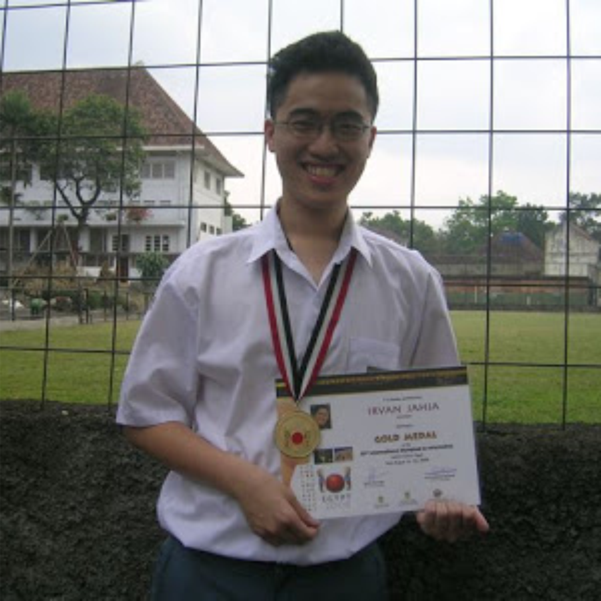

Cerita Inspiratif Pahlawan Perbatasan
Ketahui kisah para tokoh inspiratif yang berjuang melawan keterbatasan di garis perbatasan negara.

Suraidah
Bidan - 43 Tahun
Siti Suraidah ,pensiunan dosen Universitas Hasanuddin Makassar, Sulawesi Selatan itu memang memiliki ...
Lihat Artikel

Lie Dharmawan
Dokter - 73 Tahun
dr. Lie Agustinus Dharmawan, Ph.D, Sp.B, Sp.BTKV, yang bernama Tionghoa Lie Tek Bie (lahir di ...
Lihat Artikel

Fajri Nurjamil
Dokter - 33 Tahun
Suatu hari di pedalaman belantara Tiro, terbetiklah di benak Fajri kecil untuk menjadi seorang dokter ...
Lihat Artikel

Amalia Usmaianti
Dokter - 28 Tahun
Kisah yang dibagikan seorang dokter muda bernama Amalia Usmaianti (28) menarik perhatian warganet ...
Lihat Artikel
Kisah Inovatif dari Para Pahlawan Modern
Mengenal tokoh inspiratif yang telah menciptakan rangkaian perubahan bagi kepentingan masyarakat melalui inovasi
dan perjuangannya.
Nadiem Makarim
Menteri - 35 Tahun
Pada Mei 2019, Nadiem menjadi tokoh termuda se-Asia yang menerima penghargaan Nikkei Asia ...
Lihat Artikel

Sri Mulyani
Menteri - 57 Tahun
Sri Mulyani Indrawati, S.E., M.Sc., Ph.D (lahir di Bandar Lampung, Lampung, 26 Agustus 1962; umur 57 ...
Lihat Artikel

Basuku Tjahja P
Konsultan - 53 Tahun
Basuki memperoleh penghargaan sebagai Tokoh Anti Korupsi dari unsur negara dari Gerakan Tiga ...
Lihat Artikel
Agatha Chelsea
Entertaint - 17 Tahun
Chelsea merupakan salah satu dari finalis ajang pencarian penyanyi anak Idola Cilik Musim Keempat ...
Lihat Artikel

Tri Rismaharini
Wali Kota - 57 Tahun
Dr. Ir. Tri Rismaharini, M.T. terkadang ditulis Tri Risma Harini, atau yang akrab disapa Risma adalah ...
Lihat Artikel
Joko Widodo
Presiden RI - 58 Tahun
Ir. H. Joko Widodo atau Jokowi (lahir di Surakarta, Jawa Tengah, 21 Juni 1961; umur 58 tahun) adalah ...
Lihat Artikel

Kevin Sanjaya
Atlet - 24 Tahun
Kevin Sanjaya Sukamuljo (lahir di Banyuwangi, 2 Agustus 1995; umur 24 tahun) adalah salah satu atlet ...
Lihat Artikel

Irvan Tjahja
Softwate E. - 19 Tahun
Di usianya yang menjelang 18 tahun, Irvan Jahja berhasil menyabet medali emas di bidang Teknik ...
Lihat Artikel
Bagikan Kisah Inspirasimu
Bagikan pengalaman hebatmu dan jadilah inspirasi bagi sekitarmu, ciptakan perubahan sesuai ekspresi dan
caramu sendiri.
Bagikan